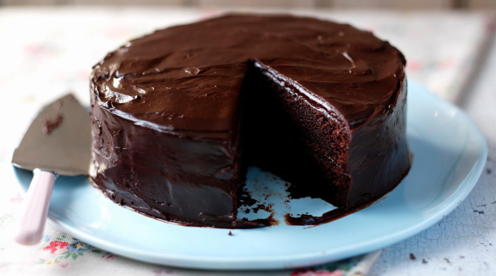

Home
Chocolate cake

Description
Our really easy chocolate cake recipe is perfect for birthdays. It's so moist, dark and decadent and will keep well for 4-5 days.
Each serving provides 477 kcal, 6.5g protein, 56g carbohydrates (of which 40g sugars), 25g fat (of which 10.5g saturates), 2.5g fibre and 0.6g salt.
Ingredients
For the cake
- 225g plain flour
- 350g caster sugar
- 85g cocoa powder
- 1 tsp baking powder
- 1 tsp bicarbonate of soda
- 2 free-range eggs
- 250ml milk
- 125ml vegetable oil
- 2 tsp vanilla extract
- 250ml boiling water
For the chocolate ganache
- 200g plain chocolate, broken into pieces
- 200ml double cream
Steps
- Preheat the oven to 180C/160C Fan/Gas 4. Grease and line two 20cm/8in sandwich tins.
- To make the cake, place all of the cake ingredients, except the boiling water, into a large mixing bowl. Using a wooden spoon, or electric whisk, beat the mixture until smooth and well combined.
- Add the boiling water to the mixture, a little at a time, until smooth. (The cake mixture will now be very liquid.)
- Divide the cake batter between the sandwich tins and bake in the oven for 25–35 minutes, or until the top is firm to the touch and a skewer inserted into the centre of the cake comes out clean.
- Remove the cakes from the oven and allow to cool completely, still in their tins, before icing.
- To make the chocolate ganache, heat the chocolate and cream in a saucepan over a low heat until the chocolate melts. Remove the pan from the heat and whisk the mixture until smooth, glossy and thickened. Set aside to cool for 1–2 hours, or until thick enough to spread over the cake.
- To assemble the cake, run a round-bladed knife around the inside of the cake tins to loosen the cakes. Carefully remove the cakes from the tins.
- Spread a little chocolate ganache over the top of one of the chocolate cakes, then carefully top with the other cake.
- Transfer the cake to a serving plate and ice the cake all over with the chocolate ganache, using a palette knife.